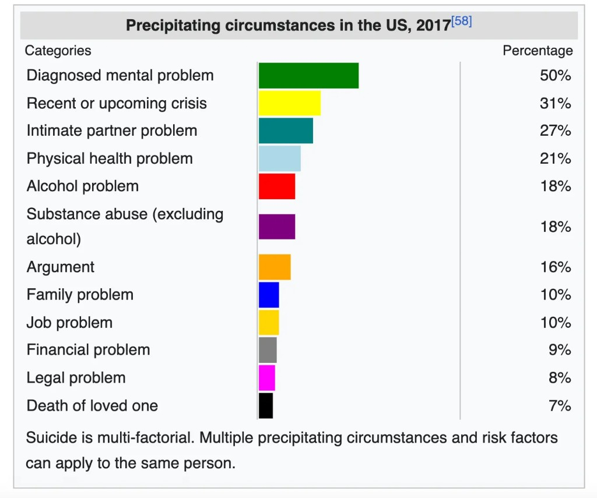
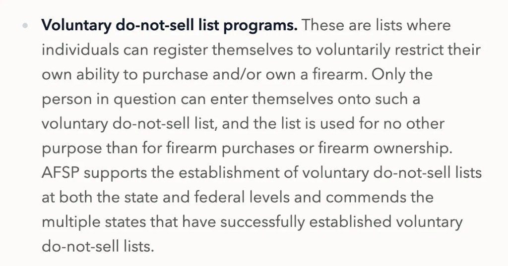

When I take my own point of view, I strongly feel that people should be able to legally do whatever they want as long as they aren't violating the rights of others. Some of my friends think that this intuition justifies a principle of absolute individual autonomy. According to such a principle, laws against driving without a seatbelt, the purchase of drugs like heroin, and medically-assisted-suicide are all unjustified.
When I take a broader point of view, like that of the government or of the universe, such a strong principle feels wrong to me. If people are systematically mistaken in their judgements about a certain action, the government should be able to correct these judgements using the law, and protect people from their own decision-making. The most serious example of systematically erroneous judgements are judgements regarding suicide: most people who survive an attempt at suicide come to regret their attempt (see here). These survivors say they were overwhelmed by temporary crisis, and experienced "tunnel vision," or a sudden inability to distance themselves from their immediate circumstances.

The values of freedom and welfare seem to conflict. I take both values seriously. When I focus on one, it seems to easily win out over the other.
Many try to identify the exact conditions under which the government is justified in enforcing a paternalistic law. In doing this, they usually assume that the action in question should have the same legal status for everybody. Instead, people should be able to decide for themselves whether a purportedly self-destructive action is legal or illegal for them to do.
If you regret doing something, does that imply, or at least suggest, that it was (morally or rationally) wrong of you to do it? "Imply" is clearly too strong — regret is just a feeling that can occur for arbitrary reasons unrelated to the rational or moral status of an action. Does regret towards an action suggest that it was morally wrong or irrational? I think the answer depends on the kind of regret that you experience.
One sort of regret happens because you now know the effects of a decision whose effects were uncertain or unknown at the time of making it. Suppose you are in a cave that is being flooded, and you encounter a fork in the path, leaving you with two options about how to continue. If you take the wrong path, and later regret your choice, that does not mean it was irrational of you to take this path.
Another kind of regret, say Regret, happens because you can see the nature of an action more clearly upon reflection. You may escalate a heated argument with violence, and later Regret doing so, because you realize that violence is only permissible in self-defense. In these cases, Regret strongly suggests that you should not have taken the action in question. We take Regret about an action to overrule the judgement that an action was worth taking, made right before taking it.
Notably, the features of Regret which allow it to overrule your immediate, heat-of-the-moment judgements can also appear in rational deliberation before taking the action. This clear-eyed, rational assessment of an action need not be purely retrospective; it can instead be actively cultivated far in advance. That is because Regret, unlike regret, does not depend on the resolution of uncertainty, or the arrival of new information. Consequently, provided the individual is in a calm and reflective state of mind, their judgment prior to acting should almost always align with whether they experience Regret afterward. This provides a clue as to how to prevent people from taking actions they will Regret.
Aside: it is possible to Regret a decision whose effects were uncertain or unknown at the time of making it. Suppose you perform a stunt which has a 50% chance of paralyzing you. Regardless of whether you become paralyzed, you may Regret the stunt, because you later judge that such extreme recklessness is unjustified. Conversely, you may become paralyzed and regret the stunt, without Regretting it, or believing it was irrational of you to have done it — you just got unlucky (or had insufficient information)!
Paternalistic interventions against taking an action are sometimes justified on the grounds that the actor will Regret taking the action in question. Suppose 80% of first-time heroin users will Regret their choice to do heroin, and 20% will not. Wouldn't it be nice if we could make it illegal to do heroin, but only if you are a member of the 80%? If what I've said about regret is correct, we can just invite people to engage in extended reflection about whether they want heroin to be a legal or illegal substance for themselves. Their in-advance judgement would reliably predict future Regret, which in turn acts as a strong proxy for the action's rationality. After they make a judgement, we can allow them to choose the legal status of the self-destructive action at hand. (Such a choice would be an example of a Ulysses pact).
An alcoholic could choose to make alcohol illegal for herself, and likewise for a gambling addict. Somebody who thinks they really should be wearing a seatbelt when they drive, but too often defects from their plans, might choose to make it illegal for them not to wear seatbelts. Importantly, anybody who really believes that the merits of wearing seatbelts are outweighed by the costs would be free not to wear a seatbelt (after completing a formal process). Many (though not all) self-destructive behaviors that are currently illegal might be moved into an "optionally illegal" category.
Ulysses pacts are already available in some states. According to the American Foundation for Suicide Prevention, some states allow you to voluntarily make it illegal to sell you firearms.

I have claimed that the government should not prevent somebody from doing something they want to do in the moment, and that they would want themselves to do when they engage with the possibility of doing it as part of an abstract hypothetical. But what about, say, first-time (adult) heroin-users that have no idea about the addictive aspects of heroin? One objection says that we should aim to make heroin illegal for the 80% of people who would Regret it, but also for the people who wouldn't Regret it but would regret it. However, a Ulysses pact would only make it illegal for people who would Regret doing heroin to do heroin.
This objection correctly identifies a limitation of Ulysses pacts. Indeed, if the number of people in the bottom left cell is large because society does not know about the harmful effects of heroin, then I would support a traditional, blanket paternalistic intervention. (Of course, this is not the case: heroin is known to be a drug that will destroy your life).
Suppose the number of people in the bottom left cell is large, despite high awareness about the effects of the action (including the effect of inducing a feeling of regret afterwards). In this case, I think a Ulysses pact should suffice, and a traditional paternalistic intervention would be unjustified. If it is common knowledge that people usually regret doing some action, and yet somebody, knowing this, decides to do it, and also rationally endorses this choice given reflective distance, then it should be legal for them to do it.
The difference between the first and second case is that people generally consent to restrictions of their own freedoms when they know they may be missing crucial information (if produce were poisoned at random, I would want my freedom to buy poisoned produce to be restricted). Hardly anybody, however, would consent to such a restriction when they have all the relevant information and they want to do what they would want themselves to do far in advance.
The system I've proposed makes the law more complicated to enforce, so there is a presumptive disadvantage it must overcome to be justified. But the current system is also very bad.
I watched a video a while ago of a Taliban general saying that the legal enforcement of modesty codes is in the interests of women, since it protects them from sexual violence. More generally, oppressive governments have often enforced terrible laws with paternalistic justifications.
One similarly terrible law is already in effect in the United States. This law makes it illegal to assist in the suicide of a person, even if they have a chronic psychiatric condition or a terminal illness. But, on the other hand, it would be a mistake to allow lethal drugs to be sold over-the-counter. Liberalizing assisted-suicide for people in chronic mental or physical pain and preventing the suicide of somebody who has had a really bad day are equally pressing and serious priorities. If the foregoing argument is correct, there should be an option that makes it legal (maybe after a year's time) to sell you lethal drugs or otherwise assist in your death. Competing values require these sorts of compromises.